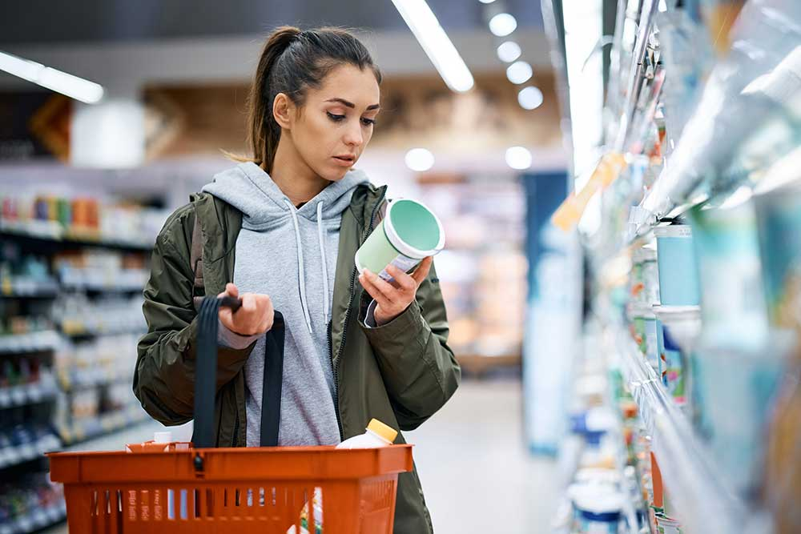
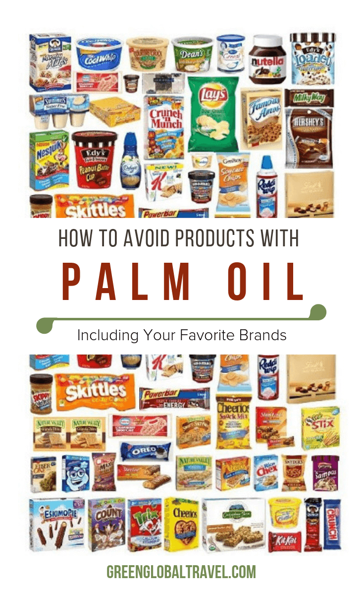
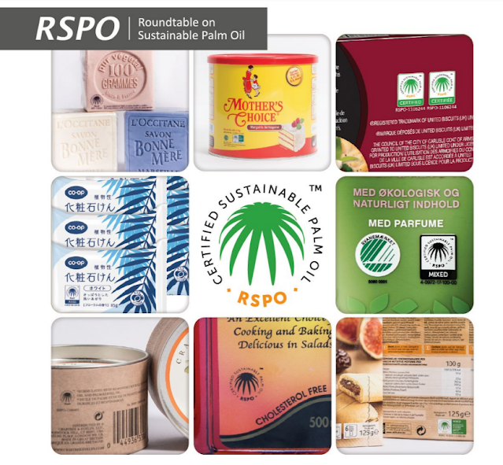
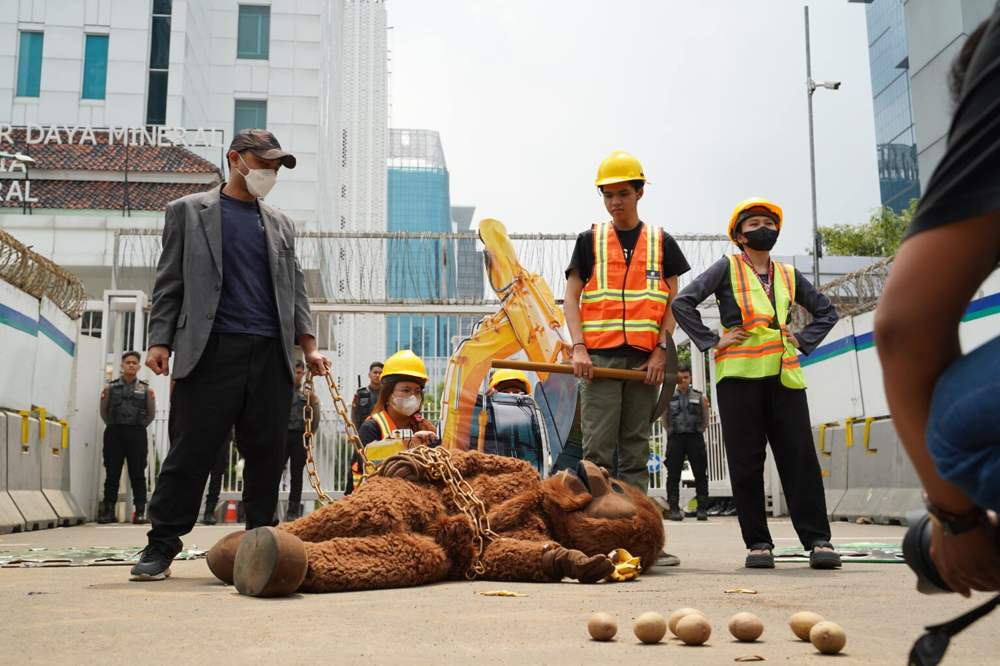

Better Recognition
Learn where palm oil appears and how to recognize palm-derived ingredients in everyday products.
From knowing to choosing
Palm oil is part of many everyday products, so the answer is not as simple as avoiding one ingredient forever. A better starting point is learning how to recognize palm oil, understand sustainability claims, and support companies and policies that protect forests, peatlands, and orangutan habitats.

1. Start with the label
Some products list palm oil directly. Others use palm-derived ingredients or technical names that are harder to identify. WWF notes that palm oil appears in nearly half of packaged supermarket products and can be found in items such as chocolate, shampoo, toothpaste, and lipstick.[1]
Reading labels will not tell the whole story, but it makes the first connection visible. A snack, soap, or cosmetic product becomes more than a finished object. It becomes part of a longer chain of farming, refining, shipping, manufacturing, and land use.


2. Understand sustainability claims
The Roundtable on Sustainable Palm Oil, or RSPO, was formed in 2004 in response to concerns about palm oil’s environmental and social impacts. Its standards encourage growers and companies to remove deforestation, peatland conversion, and human rights abuses from their supply chains.[1]
RSPO certification can be useful because it gives consumers and companies a standard to look for. But it should not be treated as the end of the question. A stronger response is to ask whether a company uses RSPO-certified palm oil across its operations, whether it can trace where its palm oil comes from, and whether it is transparent about suppliers and sourcing regions.
WWF emphasizes that companies, governments, and consumers all have roles to play. Companies can buy and use RSPO-certified palm oil, set stronger policies to remove deforestation and human rights abuses from supply chains, and be more transparent about where their palm oil comes from.[1]
Governments can also shape the system. For example, the UK government set a commitment in 2012 for 100% of the palm oil used in the UK to come from sustainable sources that do not harm nature or people. By 2019, 70% of total UK palm oil imports were sustainable, showing progress but also leaving a gap between commitment and completion.[1]
Even where certified sustainable palm oil has increased, important gaps remain. WWF points out that palm-derived ingredients used in animal feed, including feed for chickens, pigs, and cows, are less likely to be certified and require stronger transparency from industry.[1]
This gap matters because it shows that palm oil is not only a consumer-label problem. Some of its pathways are indirect. A person may never see palm oil listed on a product they buy, yet still be connected to palm-derived ingredients through food systems, livestock supply chains, or hidden industrial uses.

3. Pay attention to land decisions
A Mongabay report describes global outcry from petitioners demanding no mining expansion in orangutan habitat.[2] This example is useful because it shows that biodiversity protection is not only about what appears on a supermarket shelf. It is also about permits, land-use decisions, industrial expansion, and public resistance.
When a development project remains invisible, it is easier for damage to become inevitable. When people, journalists, scientists, and communities bring attention to a threatened habitat, the decision becomes harder to treat as a private technical matter. It becomes a public question: what kind of land use should be allowed, and what species or communities are being asked to absorb the cost?
Learn where palm oil appears and how to recognize palm-derived ingredients in everyday products.
Ask whether a brand uses certified sustainable palm oil and whether it can trace its supply chain.
Follow and share conservation journalism, habitat campaigns, and petitions that expose risky developments.
Support policies and industry standards that reduce deforestation, peatland conversion, and habitat destruction.
It is hard to become a perfect shopper overnight, but we can be harder to mislead. Once palm oil is visible as a supply-chain issue, everyday choices can connect to broader demands for transparency and forest protection.
End point
Palm oil connects everyday products to forest landscapes, corporate decisions, and orangutan survival. Once that connection is visible, the issue changes. It is no longer only about caring for a distant animal. It is about understanding how ordinary products can carry distant environmental consequences into everyday life.
Return to Start